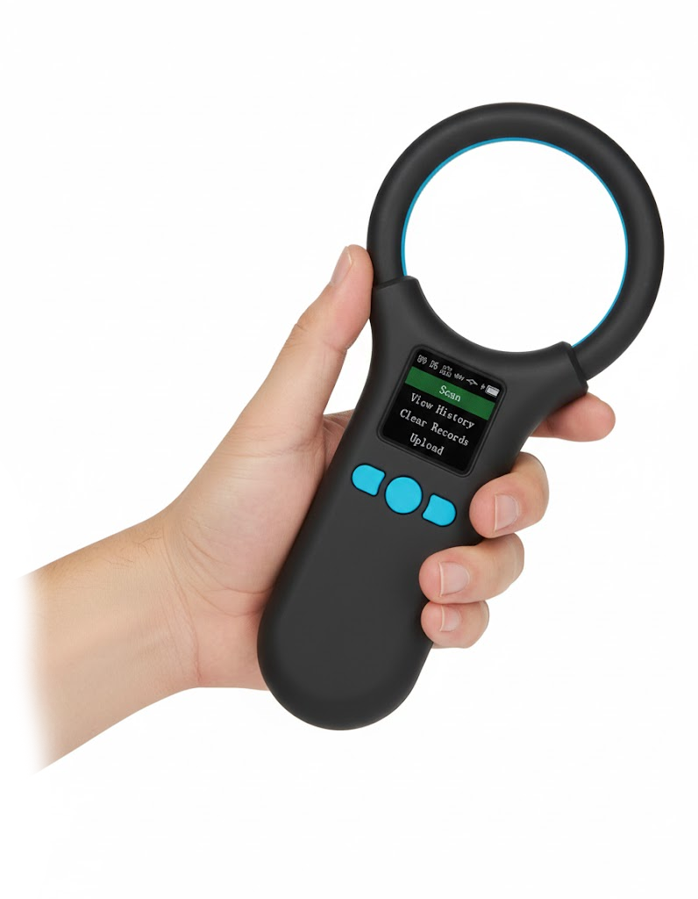
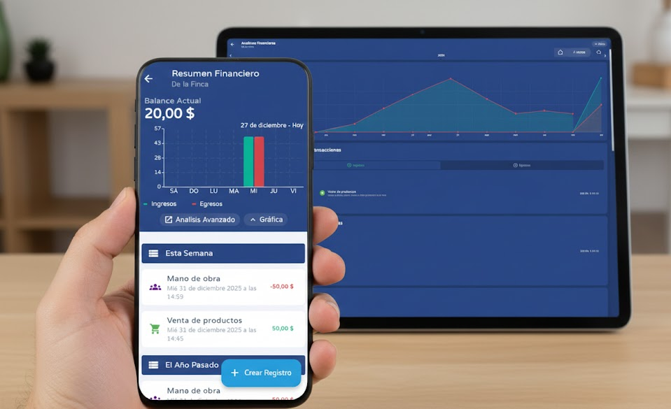
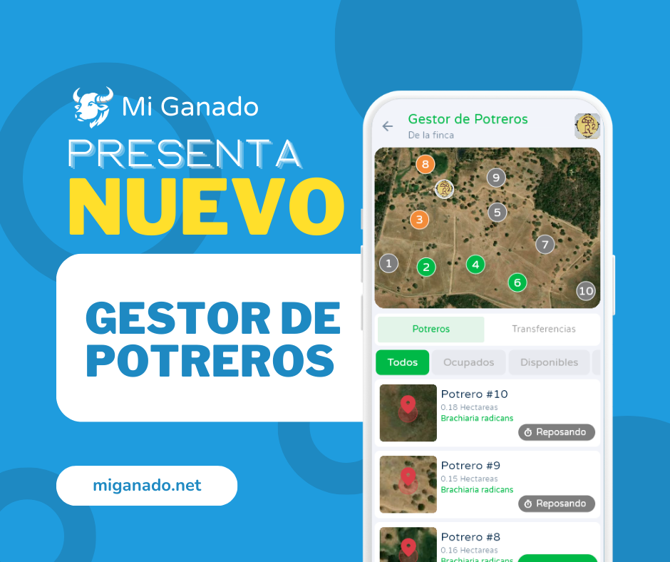
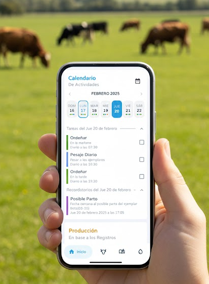
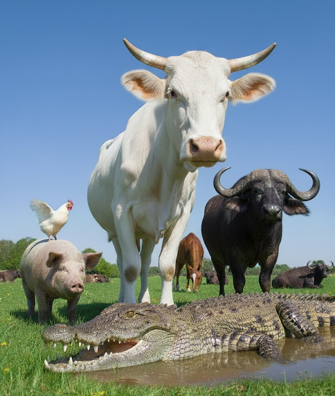

Mi Ganado
La forma más sencilla de gestionar tu ganado
Mi Ganado es el Software Ganadero y Sistema de Gestión Ganadera más sencillo de usar y que ofrece todo el control al usuario.
¡Ahora en tus manos!


¿Por qué Mi Ganado?
Mi Ganado es el único Software Ganadero y Sistema de Gestión Ganadera que combina un control total de su hato con una interfaz intuitiva y fácil de usar .
Visualización clara y sencilla
Usar Mi Ganado te proporciona gráficos y árboles genealógicos para un análisis completo de tu ganado. Maneja la trazabilidad completa y detallada de cada uno de tus ejemplares, una hoja de vida para cada animal de tu finca.


Diseño intuitivo
Mi Ganado se enfoca en traerle a los ganaderos un diseño intuitivo y completo para disfrutar lo más pronto de la aplicación.


Actualizaciones constantes
Mi Ganado te asegura actualizaciones constantes y gratuitas para mantener tu tecnología al día.
Ver actualizaciones
Control total
Mi Ganado le ofrece control total sobre cada aspecto de su ganado, ¡maneje su producción, salud, eventos, pesaje, gestaciones y mucho más! con total comodidad.


Compatibilidad con tus herramientas
Mi Ganado es compatible con tus escáneres de chips electrónicos para un manejo eficiente y controlado de tus ejemplares. ¡No tienes que configurar nada!

Gestión financiera
Mi Ganado Pro incluye funciones avanzadas de gestión financiera de la finca. Indica los ingresos y egresos de tus fincas y mira exactamente la rentabilidad de cada finca y ejemplar.

Gestor de potreros
Optimice su pastoreo con Mi Ganado. Calcule días exactos de rotación según la disponibilidad del suelo y el consumo de sus animales. Reciba notificaciones en tiempo real y gestione todas sus fincas en un solo lugar.

Sistema de tareas
Gestione su finca con precisión mediante nuestro sistema de tareas y recordatorios personalizados. Programe actividades recurrentes y reciba alertas críticas, desde rotación de potreros hasta notificaciones de partos, para que nunca pierda el control.

Libertad total de registro
A diferencia de otros sistemas, Mi Ganado le permite definir sus propias especies y razas sin límites ni menús obligatorios. Usted tiene el control total.

¡Sin límites!
Mi Ganado es una de las pocas aplicaciones que no limita las fincas o ejemplares que puedes administrar.


Alcanza el siguiente nivel de control con Mi Ganado Pro
Maximiza la eficiencia y rentabilidad de tu ganadería con herramientas avanzadas y reportes detallados.
Descubre todas las ventajas de la versión Pro y lleva tu gestión ganadera al siguiente nivel.
Mi Ganado Pro te ofrece
💻
Versión de escritorio
Acceso total a la versión de escritorio de Mi Ganado.
📊
Reportes avanzados
Emite reportes avanzados de tus fincas en un instante.
🚫
Sin publicidad
Usa Mi Ganado sin interrupciones.
☁️
Respaldo en la nube
Protege tus datos y accede desde cualquier lugar.
🔁
Sincronización
Comparte y gestiona información con múltiples usuarios en varios dispositivos.
Y mucho más
¿Listo para manejar tu ganado con control y comodidad?
Descarga Mi Ganado en tu dispositivo favorito y comienza a gestionar tu ganado de manera eficiente.